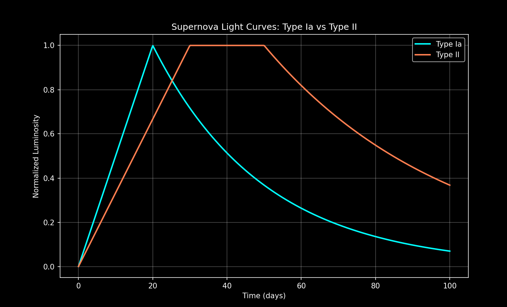

Purpose
Visualize and compare the temporal evolution of luminosity in Type Ia and Type II supernovae, highlighting differences in rise and decay timescales.
Background
Type Ia supernovae are thermonuclear explosions with a fast rise and exponential decay. Type II supernovae result from core collapse, showing slower rise, plateau, and slower decay.
Methodology
- Create time array (0–100 days).
- Define rise and decay timescales for Type Ia and Type II.
- Compute normalized luminosity using piecewise functions.
- Plot light curves on the same axes using Matplotlib.
Pseudocode
Define time array t
Define rise and decay parameters for Type Ia
Compute Type Ia luminosity as piecewise function
Define rise and decay parameters for Type II
Compute Type II luminosity as piecewise function with plateau
Plot both light curves with labels and legend
Show figure
Python Simulation Code
import numpy as np
import matplotlib.pyplot as plt
plt.style.use("dark_background")
t = np.linspace(0, 100, 500) # days
rise_ia = 20 # days to peak
decay_ia = 30 # decay timescale
lum_ia = np.piecewise(t, [t < rise_ia, t >= rise_ia],
[lambda t: t / rise_ia,
lambda t: np.exp(-(t-rise_ia)/decay_ia)])
rise_ii = 30 # days to peak
decay_ii = 50 # decay timescale
# Type II has a plateau phase after peak
lum_ii = np.piecewise(t, [t < rise_ii, (t >= rise_ii) & (t <= rise_ii + 20), t > rise_ii + 20],
[lambda t: t / rise_ii,
1.0,
lambda t: np.exp(-(t-(rise_ii+20))/decay_ii)])
fig, ax = plt.subplots(figsize=(10,6))
ax.plot(t, lum_ia, label='Type Ia', color='#00ffff', linewidth=2)
ax.plot(t, lum_ii, label='Type II', color='#ff7f50', linewidth=2)
ax.set_xlabel("Time (days)")
ax.set_ylabel("Normalized Luminosity")
ax.set_title("Supernova Light Curves: Type Ia vs Type II")
ax.legend()
ax.grid(alpha=0.3)
plt.show()
Explanation
- Type Ia rises quickly (~20 days) and decays exponentially (~30 days).
- Type II rises slower (~30 days), has a plateau (~20 days), then decays (~50 days).
- Piecewise functions allow modeling these stages.
- Dark background improves contrast for luminosity curves.
Expected Output
Two curves showing normalized luminosity over time:
- Type Ia (cyan): fast rise, exponential decay
- Type II (coral): slower rise, plateau, slower decay
